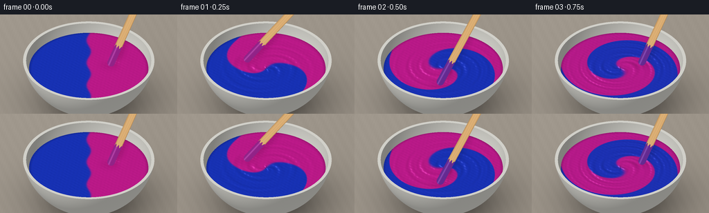
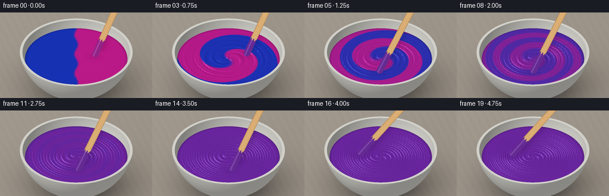

CODING AGENTS AS PIXEL WORLD MODELS
traex/GPT-6.1-Sol · material_0004
点击播放 · 原生 RGB 像素
逐轮保存的候选
回放视频、检查图与代码变化。
每份候选均可单独播放。实际图片检查记录在下方工具轨迹中。
候选 01播放与检查图
点击播放 · 原生 RGB 像素


展开代码变化
--- 上一保存版本
+++ 本次保存版本
@@ -0,0 +1,207 @@
+from pathlib import Path
+import json
+import numpy as np
+from PIL import Image, ImageDraw, ImageFilter
+import artifact_io
+
+ROOT=Path(__file__).resolve().parent
+SPEC=json.loads((ROOT/'task_spec.json').read_text())
+W,H=SPEC['width'],SPEC['height']; SS=3
+w,h=W*SS,H*SS
+rng=np.random.default_rng(9)
+Y,X=np.mgrid[0:h,0:w].astype(np.float32)
+scale=88*SS; cx=128*SS; cy=95*SS
+sx=(X-cx)/scale; sy=(cy-Y)/scale
+view=np.array([0.,-.8,.6],dtype=np.float32)
+up=np.array([0.,.6,.8],dtype=np.float32)
+O=np.stack([sx,.6*sy-4*.8,.8*sy+4*.6],axis=-1)
+D=-view
+center=np.array([0.,0.,.62],dtype=np.float32)
+light=np.array([-.48,-.34,.81]); light/=np.linalg.norm(light)
+
+def srgb(a):
+ return np.clip(a,0,255)
+
+def shade(norm, albedo, kind):
+ ndl=np.maximum(0,np.sum(norm*light,axis=-1))
+ ndv=np.maximum(0,np.sum(norm*view,axis=-1))
+ half=(light+view);half/=np.linalg.norm(half)
+ nh=np.maximum(0,np.sum(norm*half,axis=-1))
+ if kind=='ceramic':
+ amb=.56+.37*ndl
+ spec=32*nh**38+13*nh**7
+ out=albedo*amb[...,None]+spec[...,None]
+ out+=5*(1-ndv)[...,None]
+ else:
+ amb=.53+.48*ndl
+ spec=90*nh**48+19*nh**7
+ out=albedo*amb[...,None]+spec[...,None]
+ return out
+
+# Analytical orthographic geometry: thick ceramic bowl, its inner wall,
+# a circular liquid surface, and the tabletop. No rendering libraries.
+Oc=O-center
+b=np.sum(Oc*D,axis=-1)
+distance=np.full((h,w),1e6,np.float32)
+material=np.zeros((h,w),np.int8)
+normal=np.zeros((h,w,3),np.float32)
+world=np.zeros((h,w,3),np.float32)
+
+def place(t, valid, mat, n):
+ global distance,material,normal,world
+ mask=valid&(t<distance)&(t>0)
+ distance[mask]=t[mask]; material[mask]=mat
+ normal[mask]=n[mask] if np.ndim(n)>1 else n
+ pos=O+t[...,None]*D
+ world[mask]=pos[mask]
+
+for radius,far,mat in [(1.10,False,1),(1.05,True,2)]:
+ disc=b*b-(np.sum(Oc*Oc,axis=-1)-radius*radius)
+ t=-b+(1 if far else -1)*np.sqrt(np.maximum(disc,0))
+ p=O+t[...,None]*D
+ n=(p-center)/radius
+ if far:n=-n
+ place(t,(disc>=0)&(p[...,2]<=.4),mat,n)
+
+rout=np.sqrt(1.1**2-(.4-.62)**2)
+rin=np.sqrt(1.05**2-(.4-.62)**2)
+t=(.4-O[...,2])/D[2]; p=O+t[...,None]*D
+r=np.hypot(p[...,0],p[...,1])
+place(t,(r<=rout)&(r>=rin),3,np.array([0.,0.,1.]))
+paint_z=.24
+pr=np.sqrt(1.05**2-(paint_z-.62)**2)
+t=(paint_z-O[...,2])/D[2]; p=O+t[...,None]*D
+place(t,np.hypot(p[...,0],p[...,1])<=pr,4,np.array([0.,0.,1.]))
+
+# Warm matte worktop, lightly textured, and broad soft contact shadow.
+tfloor=(-.50-O[...,2])/D[2]
+floor=O+tfloor[...,None]*D
+fx,fy=floor[...,0],floor[...,1]
+noise=rng.normal(0,.38,(h,w))
+tex=1.1*np.sin(fx*41+fy*13)+.55*np.sin(fx*131-fy*28)+noise
+base=np.zeros((h,w,3),np.float32)
+bg=np.array([157.,149.,138.])
+grad=5*np.tanh((-X+w*.55)/w)+3*np.tanh((h*.35-Y)/h)
+base[:]=bg+tex[...,None]+grad[...,None]
+shadow=np.exp(-((fx-.13)**2/.92+(fy-.15)**2/.70))*0.40
+shadow+=.21*np.exp(-((fx-.05)**2/.42+(fy+.05)**2/.30))
+base*=1-shadow[...,None]
+
+for k in [1,2,3]:
+ m=material==k
+ n=normal
+ subtle=.55*np.sin(world[...,0]*140)*np.sin(world[...,1]*132)
+ al=np.zeros((h,w,3),np.float32)+np.array([239.,238.,230.])
+ al+=subtle[...,None]
+ col=shade(n,al,'ceramic')
+ if k==2:
+ col*=.94
+ # Tiny pigment stains against the inside lip, not extra paint pools.
+ base[m]=col[m]
+
+pm=material==4
+px=world[...,0]; py=world[...,1]
+rr=np.hypot(px,py)/pr
+ang=np.arctan2(py,px)
+
+# Fixed microscopic surface texture, coherently transported with the flow.
+def surface(x,y,t):
+ rad=np.sqrt(x*x+y*y+.008)
+ th=np.arctan2(y,x)
+ phase=th-t*(6.9*(np.maximum(0,1-(rad/pr)**2))**1.35+1.9)
+ # Broad spiral shoulders and smaller liquid ridges follow the stirring.
+ strength=(1-np.exp(-t*9))
+ wave=.0032*np.sin(29*rad+3*phase+.45*np.sin(4*phase+10*rad))
+ wave+=.0016*np.sin(49*rad+5*phase+.8*np.cos(3*phase))
+ wave*=strength*np.clip(1.14-rad/pr,0,1)
+ a=2*np.pi*1.35*t+.35
+ tx=.39*np.cos(a);ty=.39*np.sin(a)
+ dist=(x-tx)**2+(y-ty)**2
+ wave-=.022*np.exp(-dist/.020)
+ wave+=.008*np.exp(-dist/.08)
+ wave+=.0005*np.sin(83*x+37*y+t*1.4)*np.sin(51*y-20*x)
+ return wave
+
+def project(p):
+ return np.array([cx+scale*p[0],cy-scale*np.dot(p,up)])
+
+def stirrer(im,t):
+ a=2*np.pi*1.35*t+.35
+ tip=np.array([.39*np.cos(a),.39*np.sin(a),paint_z+.016])
+ # The unseen hand holds the upper end outside the close-up.
+ top=np.array([.86+.08*np.cos(a-.5),.47,1.60])
+ q=project(tip);e=project(top)
+ axis=e-q; length=np.linalg.norm(axis);u=axis/length
+ v=np.array([-u[1],u[0]])
+ # Rounded, flat birch mixing paddle with real grain and wet pigment tip.
+ width=10.8*SS
+ XX=X-q[0]; YY=Y-q[1]
+ z=XX*u[0]+YY*u[1]
+ cross=XX*v[0]+YY*v[1]
+ half=width/2
+ shape=(abs(cross)<half)&(z>=0)&(z<=length)
+ roundtip=(z<0)&(z>-half)&(cross*cross+z*z<half*half)
+ shape|=roundtip
+ # One softly cast shaft shadow on the paint, direction consistent with key.
+ sh=Image.new('L',(w,h),0);sd=ImageDraw.Draw(sh)
+ sh_poly=[tuple(q+v*half+np.array([4,4])*SS),tuple(e+v*half+np.array([4,4])*SS),tuple(e-v*half+np.array([4,4])*SS),tuple(q-v*half+np.array([4,4])*SS)]
+ sd.polygon(sh_poly,fill=45)
+ sh=np.asarray(sh.filter(ImageFilter.GaussianBlur(3*SS))).astype(np.float32)/255
+ ar=np.asarray(im).astype(np.float32)
+ ar[pm]*=(1-sh[pm,None]*.58)
+ grains=np.sin(cross*.7+.004*z+np.sin(z*.024)*.7)+.6*np.sin(cross*1.9+z*.008)
+ edge=np.clip(abs(cross)/half,0,1)
+ wood=np.zeros_like(ar)+np.array([195.,150.,94.])
+ wood+=grains[...,None]*np.array([5.,4.,2.])
+ wood+=(1-edge[...,None]**5)*np.array([24.,24.,22.])
+ wood-=edge[...,None]**12*np.array([31.,28.,22.])
+ wetlevel=length*.205+2*SS*np.sin(cross*.5+1)
+ wet=shape&(z<wetlevel)
+ purple=np.array([108.,33.,167.])
+ if t<.3:purple=np.array([167.,24.,154.])
+ glossy=17+35*np.exp(-((cross+half*.32)/(half*.19))**2)
+ wood[wet]=purple*.77+glossy[wet,None]
+ # Thin reflective edge of paint on the end of the paddle.
+ ar[shape]=wood[shape]
+ return Image.fromarray(np.uint8(np.clip(ar,0,255)))
+
+frames=[]
+for i in range(SPEC['frames']):
+ t=i/SPEC['fps']
+ a=np.arctan2(py,px)
+ rotation=t*(7.0*np.maximum(0,1-rr**2)**1.3+1.9)
+ # Differential rotation stretches equal pigment volumes into spiral ribbons.
+ phase=a-rotation
+ phase+=.15*(1-np.exp(-t*3))*np.sin(3*a+10*rr-t*2)
+ boundary=rr*np.cos(phase)+.035*np.sin(10*rr*np.sin(phase))
+ ribbon=.5+.5*np.tanh(boundary/(.017+.017*t*t))
+ blend=np.exp(-(t/1.88)**3.0)
+ c=.5+(ribbon-.5)*blend
+ blue=np.array([18.,47.,191.]);magenta=np.array([199.,20.,142.])
+ al=blue+(magenta-blue)*c[...,None]
+ al+=(.8*np.sin(px*86+py*77))[:,:,None]
+ eps=.0015
+ gx=(surface(px+eps,py,t)-surface(px-eps,py,t))/(2*eps)
+ gy=(surface(px,py+eps,t)-surface(px,py-eps,t))/(2*eps)
+ n=np.stack([-gx,-gy,np.ones_like(gx)],axis=-1)
+ n/=np.linalg.norm(n,axis=-1)[...,None]
+ col=shade(n,al,'paint')
+ # Fresnel brightening and a soft window reflection give wet, opaque paint.
+ ndv=np.clip(np.sum(n*view,axis=-1),0,1)
+ fres=.02+.07*(1-ndv)**4
+ col=col*(1-fres[...,None])+np.array([196.,208.,226.])*fres[...,None]
+ # Soft rectangular studio light; reflected in the gently ridged surface.
+ refl=2*np.sum(n*view,axis=-1)[...,None]*n-view
+ band=np.exp(-((refl[...,0]+.44)/.29)**8-((refl[...,1]-.57)/.21)**4)
+ col+=band[...,None]*np.array([39.,38.,43.])
+ # Slight dark meniscus indicates the viscosity and depth at the ceramic wall.
+ meniscus=np.clip((rr-.947)/.053,0,1)
+ col*=1-.16*meniscus[...,None]
+ ar=base.copy();ar[pm]=col[pm]
+ im=Image.fromarray(np.uint8(np.clip(ar,0,255)))
+ im=stirrer(im,t)
+ im=im.resize((W,H),Image.Resampling.LANCZOS)
+ frames.append(np.asarray(im))
+frames=np.stack(frames)
+artifact_io.save(frames,ROOT)
+print('Saved',frames.shape,'RGB video to',ROOT)
候选 02播放与检查图
点击播放 · 原生 RGB 像素

展开代码变化
--- 上一保存版本
+++ 本次保存版本
@@ -78,7 +78,7 @@
floor=O+tfloor[...,None]*D
fx,fy=floor[...,0],floor[...,1]
noise=rng.normal(0,.38,(h,w))
-tex=1.1*np.sin(fx*41+fy*13)+.55*np.sin(fx*131-fy*28)+noise
+tex=.3*np.sin(fx*41+fy*13)+.18*np.sin(fx*131-fy*28)+noise
base=np.zeros((h,w,3),np.float32)
bg=np.array([157.,149.,138.])
grad=5*np.tanh((-X+w*.55)/w)+3*np.tanh((h*.35-Y)/h)
@@ -111,15 +111,15 @@
phase=th-t*(6.9*(np.maximum(0,1-(rad/pr)**2))**1.35+1.9)
# Broad spiral shoulders and smaller liquid ridges follow the stirring.
strength=(1-np.exp(-t*9))
- wave=.0032*np.sin(29*rad+3*phase+.45*np.sin(4*phase+10*rad))
- wave+=.0016*np.sin(49*rad+5*phase+.8*np.cos(3*phase))
- wave*=strength*np.clip(1.14-rad/pr,0,1)
+ wave=.0025*np.sin(17*rad+3*phase+.9*np.sin(2*phase+7*rad))
+ wave+=.0007*np.sin(29*rad+5*phase+1.4*np.cos(3*phase+5*rad))
+ wave*=strength*np.clip(1.14-rad/pr,0,1)*(1-.32*(1-np.exp(-t/2)))
a=2*np.pi*1.35*t+.35
tx=.39*np.cos(a);ty=.39*np.sin(a)
dist=(x-tx)**2+(y-ty)**2
wave-=.022*np.exp(-dist/.020)
wave+=.008*np.exp(-dist/.08)
- wave+=.0005*np.sin(83*x+37*y+t*1.4)*np.sin(51*y-20*x)
+ wave+=.00011*np.sin(83*x+37*y+t*1.4)*np.sin(51*y-20*x)
return wave
def project(p):
候选 03播放与检查图
可观测工具轨迹
实际执行的命令与返回图片。
命令 1exit 0
/bin/bash -lc 'ls -la && cat prompt.txt && cat GENERATION_RULES.md && cat task_spec.json'
命令 2exit 0
/bin/bash -lc "cat artifact_io.py && python - <<'PY'
import PIL, numpy
print('PIL', PIL.__version__)
PY"命令 3exit 0
/bin/bash -lc "cat > generate.py <<'PY'
from pathlib import Path
import json
import numpy as np
from PIL import Image, ImageDraw, ImageFilter
import artifact_io
ROOT=Path(__file__).resolve().parent
SPEC=json.loads((ROOT/'task_spec.json').read_text())
W,H=SPEC['width'],SPEC['height']; SS=3
w,h=W*SS,H*SS
rng=np.random.default_rng(9)
Y,X=np.mgrid[0:h,0:w].astype(np.float32)
scale=88*SS; cx=128*SS; cy=95*SS
sx=(X-cx)/scale; sy=(cy-Y)/scale
view=np.array([0.,-.8,.6],dtype=np.float32)
up=np.array([0.,.6,.8],dtype=np.float32)
O=np.stack([sx,.6*sy-4*.8,.8*sy+4*.6],axis=-1)
D=-view
center=np.array([0.,0.,.62],dtype=np.float32)
light=np.array([-.48,-.34,.81]); light/=np.linalg.norm(light)
def srgb(a):
return np.clip(a,0,255)
def shade(norm, albedo, kind):
ndl=np.maximum(0,np.sum(norm*light,axis=-1))
ndv=np.maximum(0,np.sum(norm*view,axis=-1))
half=(light+view);half/=np.linalg.norm(half)
nh=np.maximum(0,np.sum(norm*half,axis=-1))
if kind=='ceramic':
amb=.56+.37*ndl
spec=32*nh**38+13*nh**7
out=albedo*amb[...,None]+spec[...,None]
out+=5*(1-ndv)[...,None]
else:
amb=.53+.48*ndl
spec=90*nh**48+19*nh**7
out=albedo*amb[...,None]+spec[...,None]
return out
# Analytical orthographic geometry: thick ceramic bowl, its inner wall,
# a circular liquid surface, and the tabletop. No rendering libraries.
Oc=O-center
b=np.sum(Oc*D,axis=-1)
distance=np.full((h,w),1e6,np.float32)
material=np.zeros((h,w),np.int8)
normal=np.zeros((h,w,3),np.float32)
world=np.zeros((h,w,3),np.float32)
def place(t, valid, mat, n):
global distance,material,normal,world
mask=valid&(t<distance)&(t>0)
distance[mask]=t[mask]; material[mask]=mat
normal[mask]=n[mask] if np.ndim(n)>1 else n
pos=O+t[...,None]*D
world[mask]=pos[mask]
for radius,far,mat in [(1.10,False,1),(1.05,True,2)]:
disc=b*b-(np.sum(Oc*Oc,axis=-1)-radius*radius)
t=-b+(1 if far else -1)*np.sqrt(np.maximum(disc,0))
p=O+t[...,None]*D
n=(p-center)/radius
if far:n=-n
place(t,(disc>=0)&(p[...,2]<=.4),mat,n)
rout=np.sqrt(1.1**2-(.4-.62)**2)
rin=np.sqrt(1.05**2-(.4-.62)**2)
t=(.4-O[...,2])/D[2]; p=O+t[...,None]*D
r=np.hypot(p[...,0],p[...,1])
place(t,(r<=rout)&(r>=rin),3,np.array([0.,0.,1.]))
paint_z=.24
pr=np.sqrt(1.05**2-(paint_z-.62)**2)
t=(paint_z-O[...,2])/D[2]; p=O+t[...,None]*D
place(t,np.hypot(p[...,0],p[...,1])<=pr,4,np.array([0.,0.,1.]))
# Warm matte worktop, lightly textured, and broad soft contact shadow.
tfloor=(-.50-O[...,2])/D[2]
floor=O+tfloor[...,None]*D
fx,fy=floor[...,0],floor[...,1]
noise=rng.normal(0,.38,(h,w))
tex=1.1*np.sin(fx*41+fy*13)+.55*np.sin(fx*131-fy*28)+noise
base=np.zeros((h,w,3),np.float32)
bg=np.array([157.,149.,138.])
grad=5*np.tanh((-X+w*.55)/w)+3*np.tanh((h*.35-Y)/h)
base[:]=bg+tex[...,None]+grad[...,None]
shadow=np.exp(-((fx-.13)**2/.92+(fy-.15)**2/.70))*0.40
shadow+=.21*np.exp(-((fx-.05)**2/.42+(fy+.05)**2/.30))
base*=1-shadow[...,None]
for k in [1,2,3]:
m=material==k
n=normal
subtle=.55*np.sin(world[...,0]*140)*np.sin(world[...,1]*132)
al=np.zeros((h,w,3),np.float32)+np.array([239.,238.,230.])
al+=subtle[...,None]
col=shade(n,al,'ceramic')
if k==2:
col*=.94
# Tiny pigment stains against the inside lip, not extra paint pools.
base[m]=col[m]
pm=material==4
px=world[...,0]; py=world[...,1]
rr=np.hypot(px,py)/pr
ang=np.arctan2(py,px)
# Fixed microscopic surface texture, coherently transported with the flow.
def surface(x,y,t):
rad=np.sqrt(x*x+y*y+.008)
th=np.arctan2(y,x)
phase=th-t*(6.9*(np.maximum(0,1-(rad/pr)**2))**1.35+1.9)
# Broad spiral shoulders and smaller liquid ridges follow the stirring.
strength=(1-np.exp(-t*9))
wave=.0032*np.sin(29*rad+3*phase+.45*np.sin(4*phase+10*rad))
wave+=.0016*np.sin(49*rad+5*phase+.8*np.cos(3*phase))
wave*=strength*np.clip(1.14-rad/pr,0,1)
a=2*np.pi*1.35*t+.35
tx=.39*np.cos(a);ty=.39*np.sin(a)
dist=(x-tx)**2+(y-ty)**2
wave-=.022*np.exp(-dist/.020)
wave+=.008*np.exp(-dist/.08)
wave+=.0005*np.sin(83*x+37*y+t*1.4)*np.sin(51*y-20*x)
return wave
def project(p):
return np.array([cx+scale*p[0],cy-scale*np.dot(p,up)])
def stirrer(im,t):
a=2*np.pi*1.35*t+.35
tip=np.array([.39*np.cos(a),.39*np.sin(a),paint_z+.016])
# The unseen hand holds the upper end outside the close-up.
top=np.array([.86+.08*np.cos(a-.5),.47,1.60])
q=project(tip);e=project(top)
axis=e-q; length=np.linalg.norm(axis);u=axis/length
v=np.array([-u[1],u[0]])
# Rounded, flat birch mixing paddle with real grain and wet pigment tip.
width=10.8*SS
XX=X-q[0]; YY=Y-q[1]
z=XX*u[0]+YY*u[1]
cross=XX*v[0]+YY*v[1]
half=width/2
shape=(abs(cross)<half)&(z>=0)&(z<=length)
roundtip=(z<0)&(z>-half)&(cross*cross+z*z<half*half)
shape|=roundtip
# One softly cast shaft shadow on the paint, direction consistent with key.
sh=Image.new('L',(w,h),0);sd=ImageDraw.Draw(sh)
sh_poly=[tuple(q+v*half+np.array([4,4])*SS),tuple(e+v*half+np.array([4,4])*SS),tuple(e-v*half+np.array([4,4])*SS),tuple(q-v*half+np.array([4,4])*SS)]
sd.polygon(sh_poly,fill=45)
sh=np.asarray(sh.filter(ImageFilter.GaussianBlur(3*SS))).astype(np.float32)/255
ar=np.asarray(im).astype(np.float32)
ar[pm]*=(1-sh[pm,None]*.58)
grains=np.sin(cross*.7+.004*z+np.sin(z*.024)*.7)+.6*np.sin(cross*1.9+z*.008)
edge=np.clip(abs(cross)/half,0,1)
wood=np.zeros_like(ar)+np.array([195.,150.,94.])
wood+=grains[...,None]*np.array([5.,4.,2.])
wood+=(1-edge[...,None]**5)*np.array([24.,24.,22.])
wood-=edge[...,None]**12*np.array([31.,28.,22.])
wetlevel=length*.205+2*SS*np.sin(cross*.5+1)
wet=shape&(z<wetlevel)
purple=np.array([108.,33.,167.])
if t<.3:purple=np.array([167.,24.,154.])
glossy=17+35*np.exp(-((cross+half*.32)/(half*.19))**2)
wood[wet]=purple*.77+glossy[wet,None]
# Thin reflective edge of paint on the end of the paddle.
ar[shape]=wood[shape]
return Image.fromarray(np.uint8(np.clip(ar,0,255)))
frames=[]
for i in range(SPEC['frames']):
t=i/SPEC['fps']
a=np.arctan2(py,px)
rotation=t*(7.0*np.maximum(0,1-rr**2)**1.3+1.9)
# Differential rotation stretches equal pigment volumes into spiral ribbons.
phase=a-rotation
phase+=.15*(1-np.exp(-t*3))*np.sin(3*a+10*rr-t*2)
boundary=rr*np.cos(phase)+.035*np.sin(10*rr*np.sin(phase))
ribbon=.5+.5*np.tanh(boundary/(.017+.017*t*t))
blend=np.exp(-(t/1.88)**3.0)
c=.5+(ribbon-.5)*blend
blue=np.array([18.,47.,191.]);magenta=np.array([199.,20.,142.])
al=blue+(magenta-blue)*c[...,None]
al+=(.8*np.sin(px*86+py*77))[:,:,None]
eps=.0015
gx=(surface(px+eps,py,t)-surface(px-eps,py,t))/(2*eps)
gy=(surface(px,py+eps,t)-surface(px,py-eps,t))/(2*eps)
n=np.stack([-gx,-gy,np.ones_like(gx)],axis=-1)
n/=np.linalg.norm(n,axis=-1)[...,None]
col=shade(n,al,'paint')
# Fresnel brightening and a soft window reflection give wet, opaque paint.
ndv=np.clip(np.sum(n*view,axis=-1),0,1)
fres=.02+.07*(1-ndv)**4
col=col*(1-fres[...,None])+np.array([196.,208.,226.])*fres[...,None]
# Soft rectangular studio light; reflected in the gently ridged surface.
refl=2*np.sum(n*view,axis=-1)[...,None]*n-view
band=np.exp(-((refl[...,0]+.44)/.29)**8-((refl[...,1]-.57)/.21)**4)
col+=band[...,None]*np.array([39.,38.,43.])
# Slight dark meniscus indicates the viscosity and depth at the ceramic wall.
meniscus=np.clip((rr-.947)/.053,0,1)
col*=1-.16*meniscus[...,None]
ar=base.copy();ar[pm]=col[pm]
im=Image.fromarray(np.uint8(np.clip(ar,0,255)))
im=stirrer(im,t)
im=im.resize((W,H),Image.Resampling.LANCZOS)
frames.append(np.asarray(im))
frames=np.stack(frames)
artifact_io.save(frames,ROOT)
print('Saved',frames.shape,'RGB video to',ROOT)
PY
python generate.py"命令 4exit 0
/bin/bash -lc "python - <<'PY'
p='generate.py'
s=open(p).read().replace('tex=1.1*np.sin(fx*41+fy*13)+.55*np.sin(fx*131-fy*28)+noise','tex=.3*np.sin(fx*41+fy*13)+.18*np.sin(fx*131-fy*28)+noise')
s=s.replace('wave=.0032*np.sin(29*rad+3*phase+.45*np.sin(4*phase+10*rad))','wave=.0025*np.sin(17*rad+3*phase+.9*np.sin(2*phase+7*rad))')
s=s.replace('wave+=.0016*np.sin(49*rad+5*phase+.8*np.cos(3*phase))','wave+=.0007*np.sin(29*rad+5*phase+1.4*np.cos(3*phase+5*rad))')
s=s.replace('wave*=strength*np.clip(1.14-rad/pr,0,1)','wave*=strength*np.clip(1.14-rad/pr,0,1)*(1-.32*(1-np.exp(-t/2)))')
s=s.replace('wave+=.0005*np.sin(83*x+37*y+t*1.4)*np.sin(51*y-20*x)','wave+=.00011*np.sin(83*x+37*y+t*1.4)*np.sin(51*y-20*x)')
open(p,'w').write(s)
PY
python generate.py"视觉工具实际返回图片 1

保存候选 3 份；完成命令 4 次；可验证图片返回 1 张。原始 API 响应与完整日志保留在本地。